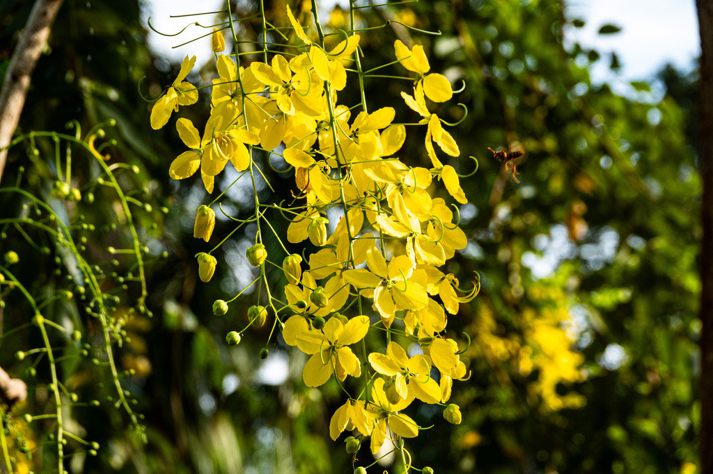

- In late spring it erupts into long, hanging chains of brilliant golden-yellow flowers, like a tree dripping in sunshine.
- It is the national tree and flower of Thailand, where its blooms symbolize royalty and good fortune.
- The long, dark seed pods that follow can reach two feet — each one divided inside into dozens of individual sealed cells, one seed per chamber, all suspended in thick, sticky pulp.
- The sticky pulp inside those pods is a traditional, and very effective, natural laxative.
Native to South and Southeast Asia, from India and Sri Lanka through Myanmar and Thailand. Long cultivated as an ornamental across the tropics for its spectacular bloom, and grown in frost-free parts of Florida.
- The golden shower tree earns its name once a year, when it covers itself in cascading clusters of bright yellow flowers so dense they can nearly hide the foliage. The display is brief but unforgettable, and has made the tree a celebrated ornamental and the national symbol of Thailand.
- After flowering come the pods — long, narrow, cylindrical, and nearly black when ripe, sometimes approaching two feet in length, with seeds set in dark, sticky pulp between papery partitions. That pulp (cassia pulp) has a long history in traditional medicine as a gentle but reliable laxative.
- It belongs to the pea family, and the flush-then-pod rhythm is a legume signature, even on a tree this showy.
The abundant nectar-rich flowers draw bees, especially large carpenter bees, and butterflies. As a legume it associates with nitrogen-fixing soil bacteria that enrich the ground around it.
A medium deciduous to semi-evergreen tree with a spreading, open crown.
Long, pendulous chains (racemes) of fragrant five-petaled golden-yellow flowers in late spring and summer.
Long, cylindrical, dark brown to black seed pods up to roughly 2 feet, with seeds in sticky pulp.
Pinnately compound with several pairs of large oval leaflets.
In bloom, the hanging golden flower chains are unmistakable. Out of bloom, look for the long, dark, sausage-like pods dangling from the branches.
The pods and seeds act as a strong laxative — eating much causes cramping, nausea, and diarrhea. It isn't dangerous in passing, but it isn't for snacking.
For dogs, the pods and seeds can cause vomiting and diarrhea, like others in the Cassia/Senna group. Keep fallen pods picked up.


- © Rob Carr (CC-BY-NC), via iNaturalist
- © flowerchild1969 (CC-BY-NC), via iNaturalist
- © Randall Carter (CC-BY-NC), via iNaturalist